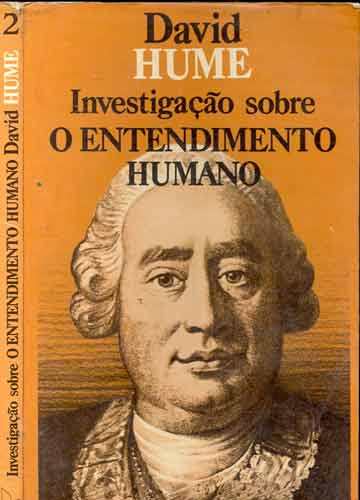
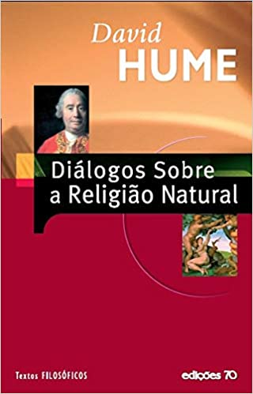
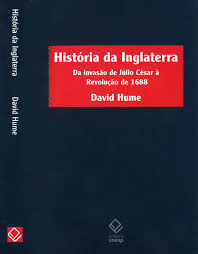

⇨David Hume nasceu em Edimburgo, Escócia no dia 7 de maio de 1711. Filho, um prestigiado advogado desde jovem demostrou interesse pela filosofia e pelas artes.
⇨Em 1724, com apenas 13, devido a sua precocidade intelectual, foi enviado pela família para cursar Direito na Universidade de Edimburgo. Depois de dois anos, deixou a universidade e se viu obrigado a trabalhar.
⇨Ingressou no mundo do comércio e empregou-se em uma importadora de açúcar em Bristol, na Inglaterra. Nessa época se dedicava à leitura de obras literárias, filosóficas e históricas, além de estudar matemática e ciências naturais.
⇨Em 1734, com o objetivo de se aprofundar nos estudos, David Hume viajou para a França. Entre 1734 e 1737 escreveu grande parte de seu “Tratado”.
⇨Em 1737 retornou à Inglaterra. Nessa época trabalhou como preceptor de um jovem marquês e depois como secretário do general James St. Clair, a quem acompanhou em uma missão diplomática em Viena e Turim .
⇨Sua obra mais emblemática foi “Ensaios Sobres o Entendimento Humano”, onde afirmava que todo conhecimento é derivado da experiência sensível do ser humano>. Em 1751, Hume foi nomeado diretor da biblioteca da Faculdade de Direito de Edimburgo. Dedicou-se a redigir os seis volumes da "História da Inglaterra".Com a monumental obra, Hume tornou-se importante historiador. Os volumes foram publicados nos anos de: 1754, 1756, 1759 e 1762, e lhe deram grande prestígio. Por fim faleceu em 25 de agosto de 1776.
•O hábito é o grande guia da vida humana. ...
•O coração do homem existe para reconciliar as contradições mais notórias. ...
•Todas as nossas ideias ou percepções mais fracas são imitações de nossas mais vivas impressões ou percepções.
•Tratado da Natureza Humana

•Investigação sobre o Entendimento
•Uma Investigação sobre os Principios da Moral

•Diálogos sobre a Religião Natural
•A Historia da Inglaterra
